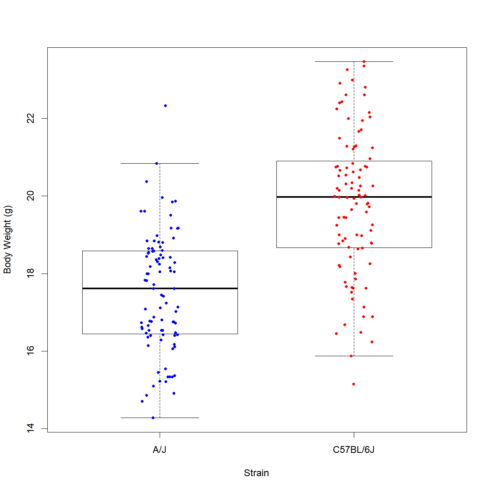

Hypothesis testing in R
Overview
Class Date:
Teaching: 80 min
Exercises: 25 minQuestions
What is the formal process for hypothesis testing?
How does hypothesis testing relate to the population and sampling distributions?
What are the assumptions of a t-test?
What does a P-value mean?
What is the right statistical test to use for my data?
Objectives
Describe the steps of developing and testing a model.
Formulate simple hypotheses.
Conceptually describe the operations performed during a statistical test.
Describe the assumptions of various statistical tests.
Understand different types of variables.
Conduct basic statistical tests in R.
In the last class we looked at what we are actually doing statistically when take a sample from a population to run an experiment. In this lesson, we will look specifically at hypothesis testing, defining the formal process of formulating and testing a set of hypotheses, and what the critical factors are for selecting the appropriate statistical tool for a given set of data.
Formulating a hypothesis
There is a basic process that we undertake as scientists to build our understanding of how a system works. This process comprises the following steps:
- Develop a model.
- Formulate a hypothesis (and corresponding null hypothesis) based on that model.
- Collect a data sample.
- Run a statistical test to test the null hypothesis.
- Interpret the statistical test.
- Accept the null hypothesis or reject it in favor of the alternative.
Let’s use the mouse study looking the role of a high-fat, high-sucrose diet on metabolism to look at each step. First, let’s load the data:
data.diet <- read.delim("./data/b6.aj.hfhs.diet.txt")
For a simple starting example, let’s say we are interested in the impact of genetic background on body weight. A first-order model can be simply stated:
Model: Body weight is determined, at least in part, by genetic background.
This model predicts that different genetic backgrounds should have different body weights at the same age. We can thus generate a hypothesis () and a corresponding null hypothesis (). Note that a properly formed hypothesis should be a specific, falsifiable prediction about a change in an experimentally testable dependent variable following a change in an independent variable:
: Age-matched mice from genetically distinct strain backgrounds will have different body weights on average.
: Age-matched mice from genetically distinct strain backgrounds will not have different body weights on average.
Our high-fat, high-sucrose diet data set includes body weight measurements for two different strains, C57BL/6 and A/J, so we have a set of observations that can be used to test the hypothesis. The idealized version of these hypotheses can be visualized as follows:

We are actually taking two samples, one from the C57BL/6J strain and one from the A/J strain. In essence, the null hypothesis is that the observations from each sample are drawn from the same effective population with respect to the measured phenotype (or at least populations with the same phenotype mean), while the alternative hypothesis is that the samples are drawn for populations with a distinct distribution for the measured phenotype.
First, we will examine the two distributions to see if there is a visual difference. There are a few ways to do this. Let’s start by plotting the density functions for the starting body weights for the two strains;
# define the density functions
dens.bw.b6 <- density(data.diet$bw_start[data.diet$strain == "C57BL/6J"])
dens.bw.aj <- density(data.diet$bw_start[data.diet$strain == "A/J"])
# define the plot limits
x.lim <- c(min(dens.bw.b6$x, dens.bw.aj$x), max(dens.bw.b6$x, dens.bw.aj$x))
y.lim <- c(0, max(dens.bw.b6$y, dens.bw.aj$y))
# plot density functions
plot(dens.bw.b6, type = "l",
col = "black", main = "", xlab = "Body Weight (g)",
xlim = x.lim, ylim = y.lim)
lines(dens.bw.aj, col = "blue")

Alternatively, we may want to look at the box and whisker plot for this data:
boxplot(data.diet$bw_start ~ data.diet$strain, # formula notation to plot body weight by strain
xlab = "Strain", ylab = "Body Weight (g)", # add some axis labels
outline = F) # turn off outlier points
stripchart(data.diet$bw_start ~ data.diet$strain, # formula notation to plot body weight by strain
pch=20, col=c("blue","red"), # change the point type and color
method = "jitter", # spread out the points in the x direction (instead of drawing them over eachother)
vert=T,add=T) # draw the points vertically to match the direction of boxplot, and add to the current plot

Well, the certainly look like distributions with different mean values. But to determine whether the difference is enough to reject the null hypothesis, we need to run a statistical test.
What are we actually doing when we run a statistical test? In the simplest form, we have a sample with a set of samples and an observed mean for our phenotype of interest. The goal of the test is to determine how likely it is that our sample came from the population that we are comparing too (in this case the population from the comparison sample). In our example, we are asking:
How likely is it that the sample of C57BL/6 body weight observations came from the same population as the A/J body weight observations?
Because of this framing, we are actually testing the null hypothesis, and choosing to accept it or reject it in favor of the alternative hypothesis. In running the statistical test, we make an assumption about the shape of the sampling distribution of the phenotype in the comparison population for the sample size and simply ask how likely it would be to observe the mean from the measured sample given that assumption. Because of the Central Limit Theorem, the assumption that the sampling distribution is normally distributed is usually valid for large sample size (n).
Because we know the distribution of all possible samples for a normally distributed sample population, we can calculate the probability that our sample is drawn from the assumed sampling distribution (this is the P-value). The general rule of thumb is that if the probability is greater than 0.05 we accept the null hypothesis, while if the probability is less than 0.05, we reject the null hypothesis in favor of the alternative hypothesis.
We can visualize this procedure:

Each statistical test has an underlying set of assumptions. The t-test is the most common test used in biological sciences (though not always in the correct situations!). These assumptions must be met for the output of the test to be valid. The t-test makes the following assumptions:
- The independent variable is bivariate (i.e. categorical with two categories)
- The dependent variable is continuous
- The mean of the sampling distributions for the two populations sampled follow a normal distribution (approximately true for large sample sizes under the Central Limit Theorem)
- Each observation of the dependent variable is independent of all other observations of the dependent variable (this is broken by, for example, cluster sampling or time-to-event variables)
- For the classical Student’s t-test, the two populations must have equal variance (i.e. the same standard deviation). However, Welch’s t-test generalizes the operation to populations with unequal variance. Unless you know that your populations have equal variance, assume unequal variance.
We can check normality using the Q-Q plot and the Shapiro-Wilk test from last class:
qqnorm(data.diet$bw_start[data.diet$strain == "C57BL/6J"])
qqline(data.diet$bw_start[data.diet$strain == "C57BL/6J"])

shapiro.test(data.diet$bw_start[data.diet$strain == "C57BL/6J"])
Shapiro-Wilk normality test
data: data.diet$bw_start[data.diet$strain == "C57BL/6J"]
W = 0.98847, p-value = 0.5732
qqnorm(data.diet$bw_start[data.diet$strain == "A/J"])
qqline(data.diet$bw_start[data.diet$strain == "A/J"])

shapiro.test(data.diet$bw_start[data.diet$strain == "A/J"])
Shapiro-Wilk normality test
data: data.diet$bw_start[data.diet$strain == "A/J"]
W = 0.98581, p-value = 0.3992
Our data meet all of the other assumptions of the t-test. We can run a t-test using the t.test() function in R:
## ?t.test
# We can either use formula notation...
t.test(data.diet$bw_start ~ data.diet$strain,
alternative = "two.sided") # specify that we want a two-sided test
Welch Two Sample t-test
data: data.diet$bw_start by data.diet$strain
t = -9.4095, df = 185.35, p-value < 2.2e-16
alternative hypothesis: true difference in means is not equal to 0
95 percent confidence interval:
-2.835463 -1.852550
sample estimates:
mean in group A/J mean in group C57BL/6J
17.47537 19.81938
# ... or by explicitly entering the two data sets
t.test(data.diet$bw_start[data.diet$strain == "C57BL/6J"],
data.diet$bw_start[data.diet$strain == "A/J"], # explicitly specifying the data sets gives the same answer
alternative = "two.sided")
Welch Two Sample t-test
data: data.diet$bw_start[data.diet$strain == "C57BL/6J"] and data.diet$bw_start[data.diet$strain == "A/J"]
t = 9.4095, df = 185.35, p-value < 2.2e-16
alternative hypothesis: true difference in means is not equal to 0
95 percent confidence interval:
1.852550 2.835463
sample estimates:
mean of x mean of y
19.81938 17.47537
As we suspected from our plot, the P-value is highly significant, and we can reject the null hypothesis in favor of the alternative hypothesis.
Choosing the right statistical test
What are the critical factors?
Variable type:
- Categorical variables are those with discrete or qualitative. They are divided into three types:
- Nominal variables have two or more categories, but no intrinsic order. For example, flower color (“red”, “green”, “blue”) or state of residence (“Washington”, “Arizona”, “Maine”) are considered nominal variables.
- Dichotomous variables are a subcategory of nominal variables with exactly two categories. For most studies, biological sex or gender (“female” or “male”) is considered dichotomous, as are questions with binary answers, e.g. “do you own a smart phone?” (“Yes” or “No”), censoring variables (0 = not censored, 1 = censored), or variables about current status (“Alive” or “Dead”).
- Ordinal are similar to nominal, except with a clear order to the values (e.g. inflammation may be characterized as “none”, “low”, “moderate”, or “high”).
- Numerical variables are quantifiable and meaningfully representable by numbers. To be considered “numerical”, the relative value must be numerically meaningful. Note that categories can be coded as numbers (see the censoring example under dichotomous variables above), but are not considered “numerical” because the relative value is not meaningful.
- Discrete variables denote quantities that are represented by whole numbers or counts. The number of items purchased at a store or the number of children in a family (i.e. “1” and “5” are meaningful, but “2.3”” is not) are discrete variables.
- Continuous variables are quantities that can be represented on a continuous number line and are not limited to discrete values. These can be further subdivided based on what type of comparison between two values is meaningful.
- Interval variables have a consistent distance between numbered values. For example, the difference between 40 and 50 degrees Fahrenheit is the same as the difference between 90 and 100 degrees Fahrenheit.
-
Ratio variables have the same properties as interval variables, except that the point 0.0 is clearly defined, such that the ratio between two values is meaningful. For example, 50 degrees Fahrenheit is not twice as hot as 25 degrees Fahrenheit, while a person who is 6 feet tall can be considered “twice as tall” as a person who is 3 feet tall. Degrees Fahrenheit is thus an interval variable, but not a ratio variable, while height is both.
- UCLA Institute for Digital Research & Education
- Handbook of Biological Statistics
Key Points
Understand basic model development and testing.
All statistical tests make assumptions about your sample and population. Understanding these assumptions is critical to running a valid test.